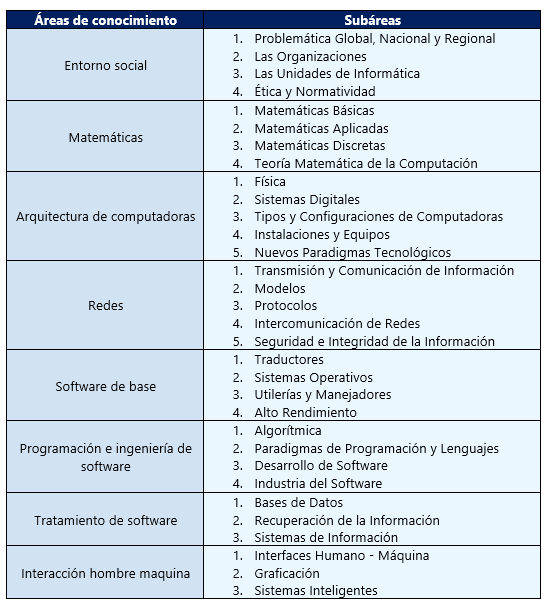
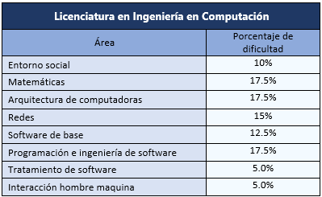

El Licenciado en Ingeniería en Computación se ocupa del diseño, implementación y mantenimiento de computadoras y de componentes de hardware de uso definido, el software asociado y su conectividad a través de redes de comunicación. El egresado tiene una sólida formación en las teorías y prácticas de la electrónica, las matemáticas aplicadas y la ingeniería de software, utilizando sus conocimientos y habilidades para la solución de los problemas relacionados con los sistemas modernos de computación y dispositivos basados en computadoras.
El plan de estudios de dicha licenciatura tiene por objeto de estudio y desarrollo de la Ingeniería en Computación para el análisis, diseño y aplicación de herramientas, ambientes de programación y aplicaciones que ayuden al desarrollo de las áreas en las que se aplican. Asimismo, el egresado basará su desempeño profesional en una actitud crítica hacia la capacidad para trabajar en equipos multidisciplinarios y en su participación como agente de cambio en entornos multiculturales.
La malla curricular establece cuáles son las asignaturas que conducirán al desarrollo de las competencias de egreso, definiendo el número total de horas para cada asignatura, los créditos que proporciona y su modalidad. De igual forma, define el número de asignaturas que conformará cada uno de los semestres y el número total de horas del plan de estudios.
 
Puedes encontrar más información con respecto a estas áreas en el documento creado por la ANIEI dando clic aquí.
Los ingenieros en computación tienen un campo laboral muy amplio, puesto que pueden desempeñarse en cualquier sector que necesite del diseño, desarrollo e implementación de sistemas que involucren software y hardware, ya sea, en el sector gubernamental, industrial, comercial de servicios y académico. Por ejemplo, las empresas.
ANÓNIMO, TERCER SEMESTRE
¿Por qué elegiste esta carrera?
Me llamaba el entorno de la computación, y además en mi preparatoeia hubo una plática por parte de la FMAT (Facultad de Matemáticas) que explicaba las
diferencias entre cada carrera de computación que ofrece la UADY.
¿Qué es lo que más te gusta de tu carrera?
El hecho de que no necesitas ser el mejor programador o el mejor matemático para hacer algo importante o innovador.
¿Qué consejo le darías a un estudiante que se encuentra en el primer semestre de la misma carrera?
Que busque muy bien a sus compañeros para hacer equipo, y que siempre varíe de personas para conocer a más gente.
22-01-2021